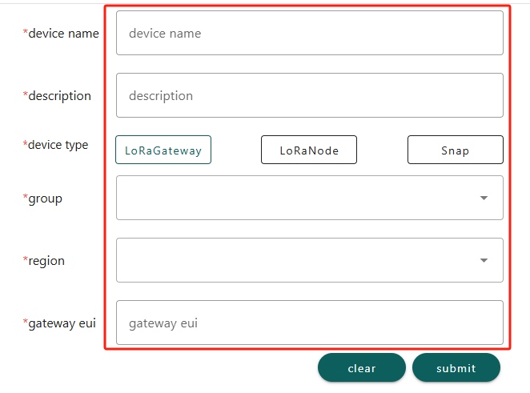

Heltec HT-M01S Connect to Snapemu
Firstly, users can quickly configure the gateway according to this document.
Register a LoRa gateway in Snapemu
User log in to Snapemu by using their Heltec website account.

User successfully logs in, this interface will be displayed.

Registering the device, click where shown below.

Select device type and fill in configuration information on this interface.


device nameanddescriptioncan be filled in freely, and they will become the name and remark of the device displayed on the platform.Groupdenotes the grouping of the device on SnapEmu.device typeThis device is a gateway, so choose “LoRaGateway”.RegionMatch the frequency band of the gateway.GatewayEUIGateway ID, through device configuration page or scan the device QR code to obtain.
After filling in the information, click Submit and refresh the page to see the device. Then click here to select the corresponding product image.
If everything goes smoothly, it will be as shown in the picture.